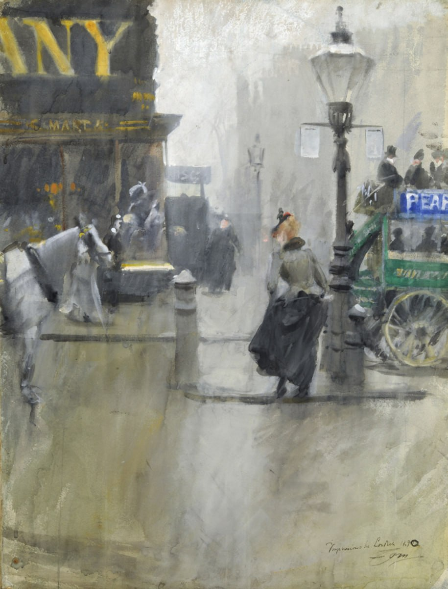

Андерс Леонард Цорн
Impressions de Londres (Впечатления от Лондона), 1890

Гётеборгский художественный музей, Гётеборг
Завещание Helen Metcalfe, 2000 г.
Несмотря на успехи в живописи маслом, Андерс Зорн продолжал писать акварели. Его быстрая и искусная техника идеально подходила для запечатления непредсказуемой жизни города. Шедевром жанра является его картина «Впечатления от Лондона», которая даёт чёткое представление о лондонской улице в дождливый день. Женщина в сером и чёрном платье переходит улицу, придерживая юбку, чтобы она не промокла. Она стоит между белой лошадью в упряжке, тело которой обрезано краем картины, и фонарным столбом с рекламными объявлениями, свисающими с лестницы. Зелёный двухэтажный омнибус исчезает справа. Смелое кадрирование усиливает впечатление движения на оживлённой улице. Над магазином слева висит броская вывеска крупными жёлтыми буквами, образующая слово «[Компания]», обозначающая современную городскую визуальную среду, которая так интересовала импрессионистов. Здания дальше на картине скрыты дождем. Несколько пешеходов проходят по другой стороне улицы. Художнику удалось запечатлеть отражение белого света на мокрой улице, в то время как дождь размывает контуры объектов. Акварель, вероятно, была написана во время поездки Зорна в Лондон на Рождество и Новый год 1889-90 гг.
Источник: https://collection.goteborgskonstmuseum.se/en/collection/item/10068/